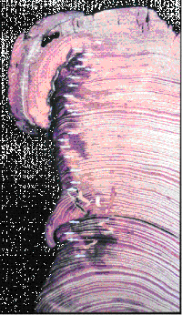

Dendrochronology:
|  Photo provided by C.D. Allen and H.D. Grissino-Mayer |
Common objectives:
|
Previous Page |
Next Page
Introduction |
Dendrochronology Applications |
Crossdating Application |
Ring-Growth Anomalies
Sensitivity-Complacency |
Skeleton Plotting |
Relative Scale |
Master Chronology
Pattern Matching |
Finding the Dates |
Absent/False Rings |
Try Skeleton Plotting for Yourself!
Laboratory of Tree-Ring Research
Copyright © 1999-2014 Laboratory of Tree-Ring Research, The University of Arizona
Revised – September, 2014